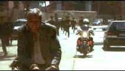

Red Corner(SE)/C,B+ |
MGM-UA/1997/122/WS,ANA 1.85 |
Red Corner is a big disappointment. Crafted in fine
style with polished photography of exotic and sumptuous locations, the script is so poorly
constructed it seems to have been trampled on by a hoard of Red Guards.
Richard Gere plays an American executive Jack Moore visiting China to
complete a television distribution deal with the government. There are forces that
oppose the content of the American programming that Moore's company is offering, but his
relationship with the minister almost assures that the deal will be successfully
completed. To sabotage the deal, Moore is set-up with an attractive model. Of course, if
he doesn't pick her up the plot goes to square one, but the writers never take that and
many other false elements into consideration. After a night of pleasure with the beautiful
Oriental woman, Moore awakens covered in blood and surrounded by police. He is whisked off
to prison amidst protests of innocence.
|
 |
The not-so-great escape©MGM-UA |
Next, Red Corner takes aim at the Chinese judicial
system, depicting it as nothing more than a sham to protect the government interests. True
or not, the film makes its points in heavy-handed fashion. Moore's assumed rights are
ill-defined and there is little that the American diplomatic authorities can do to help.
The film turns another corner when Moore is assigned counsel by the court. She's another
beautiful Oriental woman for Moore to get involved with, this time on a more emotional
level.
Characters are inconsistent and motivation is highly unlikely,
but the actors try hard. Richard Gere is fine as Jack Moore. It seems his only mistake is
having taken the role. Bai Ling is delicate as his Chinese lawyer, but her performance is
too stiff. Byron Mann plays ambitious Chinese television official Lin Don with a bit too
much enthusiasm.
Could
everybody in Red Corner be sporting intense tans? I doubt it. It appears that
skin tones are far too red. Aside from that qualm, Red Corner is an excellent DVD
presentation. Small details in street scenes are in focus and close-ups reveal every pore
of skin. Darker scenes when shadowy deeds are done reveal the filmmaker's vision. The
Dolby Digital 5:1 sound very fine handling directionality and clarity with equal
ease. The music is open with great space around it. Bass reproduction is solid and
powerful.
|
The
Feature
Archive has
articles ranging from John
Ford to Blonde
Bimbos, The
Heistmasters and Frank
Darabont. |
|
Imaging
Science Foundation |
|
HOT
LINKS |
|
Home Theater Reference Reviewing System When you read a DVD review it's of utmost importance to know what equipment is being used to evaluate quality. Click on the projectors to find out more. |